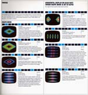

Model # C240
Since when did Atari make stereo equipment??? Your probably asking yourself looking at the picture to the left and the one below. Well this rather unique and odd piece of equipment was thought about by Bob Brown of Atari. The idea was an interesting one; you would hookup your hi-fi stereo system to the RCA inputs on the back of the Video Music, then hook it up to your Television set.
Now came the fun part, you'd put on your favorite 70's music and power up your Video Music and by playing around with any of the 12 buttons and 5 knobs you could custom create an effect on your TV that would dance, bounce and gyrate to the beat of the music you were playing. Now you say to yourself "Gee, that sounds familiar". Well perhaps you may have heard of the VLM (Video Light Machine) built into all of the JagCD's for the Atari Jaguar 64 game console, its the exact same concept, but of course with much better resolution and of course Jeff Minter's trademark "Meltovision" effects which is more or less a 1990's tribute to the original Video Music from 1976.
It should be noted as a warning, take care in handling the Atari Video Music's as far as static electricity is concerned. There is a grounding problem on these units and they should be plugged into the wall before plugging in the RCA inputs into the back of the units to allow any static electricity to be grounded and not damage the circuitry. If your Video Music is not functioning, you will find below a set of schematics for the Video Music to help assist in troubleshooting and repair.

Video Music Instructions
Click for full sized
image.
Atari Video Music Schematics

{kind=link}
{kind=link}
{kind=link}